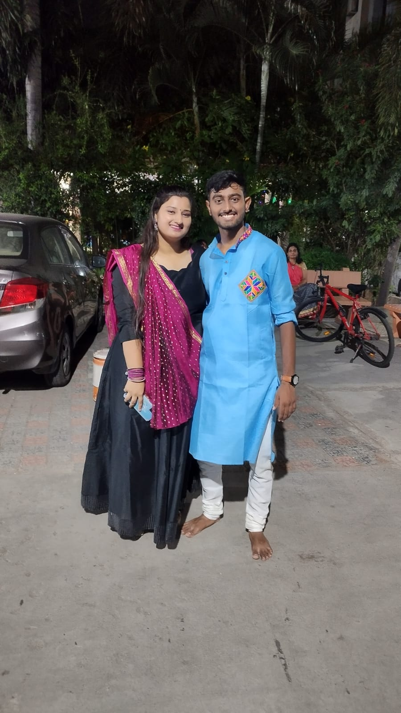

Anjali My Love of life
Anjali my love,
As I sit here, pen in hand, my heart overflows with love and affection for you. There are no words that can fully express the depth of my feelings, but I hope this love note serves as a small glimpse into the vast ocean of emotions that reside within me.
From the moment our paths intertwined, you have become the beating pulse of my existence. Your presence fills my days with joy, and your smile brightens even the darkest corners of my world. You are the light that guides me through life's ups and downs, and I am eternally grateful to have you by my side.
Every time I look into your eyes, I see a reflection of my soul. Your gaze captivates me, unveiling a world of tenderness, warmth, and understanding. In your arms, I find solace and comfort, knowing that I am cherished and loved unconditionally.
Your laughter is a symphony that resonates deep within my heart, lifting my spirits and reminding me of the beauty in the simplest moments. Your touch, so gentle and loving, electrifies my being, sending waves of passion coursing through my veins.
Together, we have created memories that will forever be imprinted in the fabric of our lives. From the adventures we've embarked upon to the quiet moments of shared silence, each experience has deepened our connection, strengthening the bond that unites us.
I am in awe of your strength, your resilience, and your unwavering belief in the power of love. You inspire me to be the best version of myself, and your unwavering support fuels my dreams and aspirations. With you by my side, I know that anything is possible.
In this love note, I want to assure you that my love for you knows no bounds. It transcends time and space, reaching far beyond the boundaries of this world. You are my soulmate, my confidante, and my partner in all of life's adventures.
Thank you for loving me so completely and unconditionally. I am honored to be your partner, and I promise to cherish and protect our love with every breath I take. Together, we will create a future filled with love, laughter, and endless possibilities.

Apology kaho ya Guilt story:
I am writing this note with a heavy heart, consumed by deep remorse and regret for the pain I have caused you. There are no excuses that can justify my actions, and I take full responsibility for the hurt I have inflicted upon our relationship.
Words cannot adequately express the depth of my sorrow for betraying your trust. I understand that my infidelity has shattered the foundation of our love, and I am devastated by the knowledge of the pain I have caused you. I never intended to bring such anguish into your life, and I am truly sorry for my actions.
I want you to know that I am fully aware of the gravity of my mistake and the consequences it has on our relationship. The love we shared was something truly special, and I allowed my weaknesses to cloud my judgment and hurt the person I care about most.
Please believe me when I say that I am committed to making amends and working tirelessly to regain your trust. I understand that forgiveness will not come easily, and I am prepared to do whatever it takes to prove to you that I am worthy of a second chance.
I will seek counseling or therapy to address the underlying issues that led to my infidelity. I want to understand myself better and become a better person for you. I am ready to embark on a journey of self-reflection and growth, with the hope that we can rebuild our relationship on a foundation of trust, love, and respect.
I ask for your patience and understanding as we navigate through this difficult time. I know that healing will take time, and I am willing to put in the effort and make the necessary changes to become the partner you deserve.
Please remember that despite my grave mistake, my love for you remains steadfast and unwavering. You are the most important person in my life, and I am determined to do whatever it takes to repair the damage I have caused and rebuild our trust together.
Pr yeh baat humesha yaad rakhna ki PYAAR sbse BADA hota h, baki kutch bhi usse bada nhi ho sakta
And plz never breakup, mai kabhi krne he nhi dunga. Plz never leave me
Physical Relationship:
Yes, I need it,I want it, I love it, it's my basic body need and I have right to have sex with you as ur boyfriend. But yr it's not the only reason I am with you. I do care for you, handle you, give you time, respects you, love you alot, listens you, makes you listen, handles you and ur emotions, yes there r times I have done mistakes but I want to correct them, I haven't done them knowingly or it's not like I want to hurt you. It just kills me from inside when you thinks and say I just want you for sex 😭 😭.
I wanna roam with you, eat with you, met you first(even before my family members) when I come hometown, wanna watch movies together,wanna play with ur hairs, wanna smell you, wanna spend nights cuddling and hold hands in public, wanna hug you tight, wanna have touring plans with you, spend as much quality time as possible with you.
I wants to have happy and tough times together(just like till now).
Basically I just want you in my Life and wanna spend as much time as possible in your arms...
Before things start getting worst between us I was confident enough on you that I starts being physical without asking for ur permission or even when u say no, I loved it thinking that u r my mine whatever happens, and even you loved me being physical forcefully even when you say no. But now I lost that confidence too. Now I am unable to do so from my side. So I leave it on you now weather u want it or not. It's your choice but I love it and Love you too and your soul.
Apology kaho ya Guilt story:
First and foremost, I want you to know how much you mean to me. Our bond has been built on trust, understanding, and unconditional love. We have weathered storms together, and I believe that our connection is strong enough to navigate any challenges that come our way.
Relationships inevitably go through ups and downs, and I understand that we may have hit a rough patch recently. However, I firmly believe that these challenging moments are opportunities for us to grow as individuals and as a couple. Instead of viewing this as a reason to part ways, I propose that we take this as a chance to renew our commitment and work on strengthening the foundation of our relationship.
Remember all the adventures we've embarked on? The late-night conversations where we laughed until our bellies hurt? The support we've provided each other during difficult times? These are the building blocks of a love that is worth fighting for. We have built something beautiful, and I genuinely believe it would be a mistake to let go of it without giving our best effort to revive what has been a source of happiness and fulfillment for both of us.
I want to assure you that I am willing to make changes and put in the necessary effort to address any concerns you may have. Communication is key, and I am committed to actively listening and understanding your needs, as well as expressing my own.
I understand that relationships require compromise and the ability to adapt to each other's growth. As we continue to evolve individually, we can embrace these changes and find ways to support each other's personal development. Together, we can create a shared vision for our future, filled with love, trust, and shared goals.
Please remember that love is not a destination, but a journey. It requires effort, commitment, and a willingness to grow and learn together. I believe in us, in what we have created, and in the potential of our relationship. Let's not give up on each other just yet. Let's fight for our love and give it the chance it deserves.
I would be honored to have an open and honest conversation with you, to hear your thoughts and feelings, and to work together on finding a way forward. Our journey is far from over, and I am hopeful that we can find a way to rekindle the spark that has brought us so much joy.
Always remember You are my:

World ♥
I LOVE YOU 3000